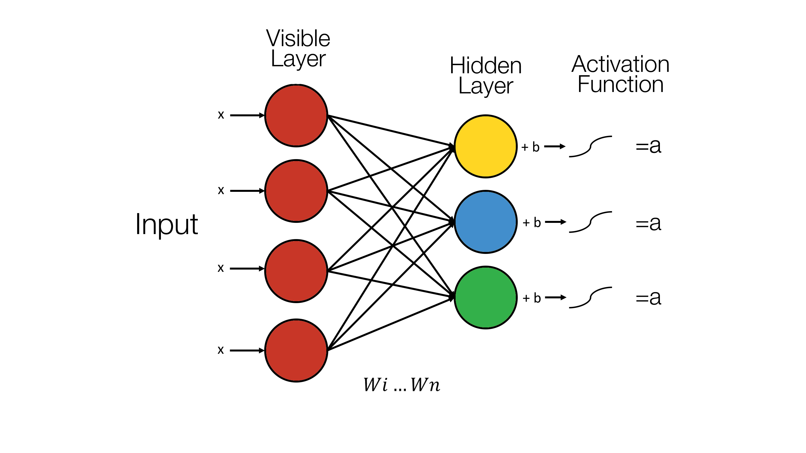
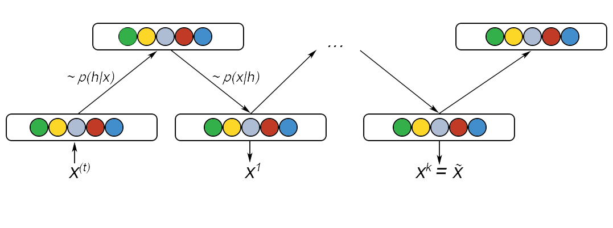
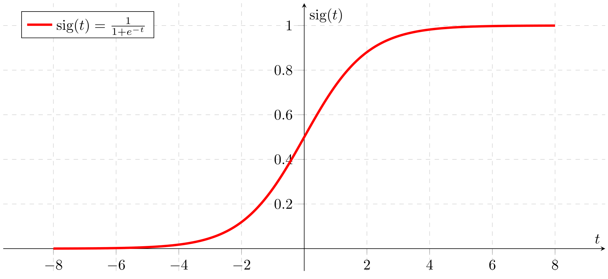

Table of Contents
Visible and Hidden nodes
Restricted Boltzmann machines are a “shallow, two-layer neural network”. They are composed of two layers, the first being the visible layer and the second, the hidden layer (8). The “restricted” in the “Restricted Boltzmann Machine” restricts any intra-layer communication. This means that there doesn’t exist any visible-visible or hidden-hidden communication (3). This forms a complete bi-partite graph.
Each visible unit of the first layer, i.e. the visible layer, corresponds to a single component of an observation(9). For example “from a dataset of grayscale images, each visible node would receive one pixel-value for each pixel in one image (3)”.
“The hidden units model dependencies between the components of observations (9)”. The hidden units depend on the input into the visible layer and for each node in the hidden layer, each input is multiplied by its respective weight. The sum of the products is then added to a bias (3). This is then “fed into an activation function (3)”. For example, one of the more common activation functions is the sigmoid function which our RBM uses and is discussed in the section on the Sigmoid Function section on this page.
This diagram effective shows the formula for calculating the value of a hidden unit:

The hidden units are activated when the “output” (3) is “greater than a random number uniformly distributed between 0 and 1 (10)”.
Bias and Weights
Bias
RBMs have two biases and this is one of the key features which distinguishes it from other auto-encoders (3). The two types of biases are “visible biases” and “hidden biases”(10).
The biases are important as “hidden bias helps the RBM produce the activation on the forward pass” and the “visible biases help the RBM learn the reconstruction on the backward pass(3)”.
Weights
Weights are the “connection(10)” between the visible and the hidden units. It forms a “bidirectional and symmetric(11)” graph. The usage of the weights works the “same in both directions”. Weights are initialised “to some small random value” and then are updated as the RBM is trained in following way(10):
“where \(v_{i}\), \(h_{j}\) are the binary state of visible unit i and hidden unit \(j\), \(a_{j}\), \(b_{j}\) are their biases and \(w_{ij}\) is the weight between them”(10) and “epsilon is a learning rate(10)”. “The update rule for the biases \(a_{j}\) and \(b_{j}\) can be defined analogously(12)”.
Contrastive Divergence
What is it?
The mathematics and nitty-gritty behind this is as follows. This has been largely taken and modified from Oliver Woodford’s “Notes on contrastive divergence”(15), Miguel A. and Geoffrey Hinton’s “On Contrastive Divergence Learning”(16) and Deep Learning’s notes on RBMs(8).
Why Contrastive Divergence?
Now that we understand what it is, let us understand why we need it
The RBM is fed with training data which we call \(\ \textbf X = (x_{1},..,k) \). \( \Theta\) is a vector of the model parameters. If we model the probability of a data point, \(\ x \), we use a function \(f\left(x; \Theta\right)\). If \(p\left(x; \Theta\right)\) is the probability of \(\ x \) occurring, integrating this over every single data point, i.e. over all possible \(\ x \)’s, would give you the value \(1\). Let us define a partition function \(Z\) as well. The probability of \(\ x \), \(p\left(x; \Theta\right)\) must therefore be
Where
To learn \(\Theta\) most effectively, we maximize the probability of the training set of data \(X\) like so:
This is equivalent to minimizing the negative log of \(p\left(x; \Theta\right)\), which we will denote as \(E( \textbf X; \Theta)\). This is known as the energy function:
Now if we choose \(f\left(x; \Theta\right)\) to be the pdf of a normal distribution \(\aleph (x ; \mu, \sigma)\) so that \(\Theta = \{\mu , \sigma \} \) . The integral of the pdf would be 1 and thus \(\log Z(\Theta) = 1 \). By differentiating our energy function with respect to \( \mu \), it shows the ideal \( \mu \) is the average of \( \textbf X \), our training data. The optimal \(\sigma\), can be found by differentiating (4) with respect to \(\sigma\), is the square root of the variance of the data, i.e., the standard deviation. We can see that, in this specific case, a method to minimise our energy function exists. However, let as look at the case where our probability model function, \(f\left(x; \Theta\right)\), is the sum of N normal distributions such that \(\Theta = \{\mu_{1,..,N}, \sigma _{1,..,N}\}\):
Again, with the integral of the normal distribution function equating to one, using equation (2), we show that \(Z = N\) and therefor, \(\log Z(\Theta) = \log N\). However, when we differentiate (4) this time round, we see that the optimal values for \(\mu_{i}\) and \(\sigma{i}\), where i is some value between 1 and N, are dependent on other model parameters. Thus we are unable to calculate the optimal model parameters directly and are required to use partial differential equations and a method known as gradient descent to find the local minima, i.e. that of the energy.
Oliver Woodford explains with a great analogy what gradient descent (with line search) is. He describes it as “being in a field at night with a torch”. He then goes on to say that “we can either feel the gradient of the field at the point we’re standing, or else estimate it by using the torch to see the relative height of the field a short distance in each direction from us (numerical differentiation using finite differences). Then, by shining the torch beam in our chosen direction of travel, it also allows us to see the lowest point in the field in that direction. We can then walk to that point, and iteratively choose a new direction and distance to walk”.
Lastly, if we choose \(f\left(x; \Theta\right)\), to be the product of N normal distributions such that:
\(Z\left(\Theta \right)\) is not a constant anymore. This can be checked by using having two model parameters with the same \(\mu\) and different \(\sigma\). It is possible to compute the partition function here, while given \(\Theta\), the integration of (2) has far too much time-complexity associated with it especially for high-dimensional data spaces and high-dimensional parameter space scales it even further.
This is where Contrastive Divergence steps in. Since it is impossible to compute the energy function, contrastive divergence gives us a reliable way to estimate the gradient of said function.
Going back to the apt field metaphor by Oliver Woodford, “we now find ourselves in the field without any light whatsoever (i.e. we can’t calculate energy), so we cannot establish the height of any point in the field relative to our own. Contrastive divergence effectively gives us a sense of balance, allowing us to the feel the gradient of the field under our feet. By taking very small steps in the direction of steepest gradient we can then find our way to a local minimum.”
To derive the gradient, we first pen down the partial derivative of (4) as follows:
Where \(\langle y \rangle_{x}\) is the “expectation of y given the training data \(\textbf X\). The first term on the RHS of (8) comes from the partitioning function \(Z(\Theta)\), which as seen above and from (2), involves integrating over x. If we substitute this back, we get
As has been discussed before, this integration is intractable as it cannot be solved in terms of a closed form expression. However, if we take a closer look at (14), we can see that it can be approximated by drawing samples from the distribution \(p\left(x; \Theta\right)\). However, these samples cannot be taken directly from the probability distribution as we do not have a numerical value for the partitioning function \(Z(\Theta)\). Now, we utilise a method of using several cycles of “Markov Chain Monte Carlo” to approximate (14).
The Markov Chain Monte Carlo (MCMC) has been succinctly explained by an anonymous user on Stack Overflow. MCMC’s objective is to generate random draws from a target distribution and then identify a way to construct a Markov chain that is as optimal as possible such that the Markov Chain’s probability distribution at equilibrium is equal to our target’s probability distribution. We can do so by constructing a chain that starts at some arbitrary point and then iterating Markov Chain infinitely till we get our desired probability distribution.
We then approximate the quantities of interest (e.g. the mean) by taking the sample average of the draws after discarding a few initial draws which is the Monte Carlo component. For our RBM implementation, we utilised Gibbs sampling, a type of MCMC which we will break down later on.
Now, Xn represents the training data transformed using n iterations of MCMC sampling such that \(\textbf X_{0} \equiv \textbf{X}\). Now if we substitute this back into (8) we arrive at this:
If we observe this carefully, we see that we still have an extremely large computational task at head. The number of MCMC cycles required is astronomically large and this would take far too long. Hinton proposes that all the approximation can be done in a few cycles, even just one. As such, we arrive at the following, after minimizing our energy function; the parameter update equation:
Gibbs Sampling
Gibbs sampling is a “a general method for probabilistic inference” (17). As explained previously, it is a Markov Chain Monte Carlo (MCMC) algorithm(18). As described in the section above, this MCMC technique is a way of estimating the integral. In Gibbs sampling, each random variable is iteratively resampled from its conditional distribution given the remaining variables(19).
We will now go into detail about how Gibbs sampling is performed. This section’s math and logic has largely been modified and taken from Deeplearning.net’s RBM article and “Gibbs Sampling For The Uninitiated” by Philip Resnik and Eric Hardisty (18,8).
With our probability function described earlier, \(p\), samples of this can be obtained by running the Markov chain till we reach the desired values. All this is done while using Gibbs sampling as the “transitional operator”.
Gibbs sampling of the joint of \(N\) random variable \(S = (S_{1},…, S_{N})\) is done through iterative sampling “sub-steps” N times. This is of the form
Where the term \(S_{-i}\) contains the other N-1 random variables in S excluding i. In the case of a RBM, \(S\) is the set of visible and hidden nodes. However, since an RBM is a complete bipartite graph, the set of hidden and visible nodes have no intra connection. So, we perform “Gibbs block sampling”. In this transitional operator, given the hidden nodes, we sample all of the visible nodes simultaneously and vice versa for sampling the hidden node. Thus a single step in the MCMC process can be represented as follows
Where \(h^{(n)}\) refers to the set of all the hidden nodes at the \(n^{th}\) step of MCMC. Find below a diagram that explains this process:

Infinite iterations of this would guarantee that the samples are 100% accurate. However, this would be extremely time inefficient and we use Contrastive Divergence to speed this up. We initialise the Markov chain with a training example instead so that the chain will already be close to its final value.
Contrastive divergence is run once instead of k times as in practice, it has shown to work surprisingly well(4,16,8).
Sigmoid Function
The sigmoid function is a relatively simple mathematical function that is implemented in the RBM. It is also referred to as the “sigmoidal curve or the logistic function”(20). The formula is given by:
Now we know know the workings of a RBM, let us look at how a Deep Belief Network works!